rosiwit_coverage_planner v2.0 | 测试日期: 2026-04-29
障碍物膨胀、形态学处理 | 膨胀率: 1.33%-6.00%
BFS连通域检测 | 自动分割复杂区域
PCA方向检测 | 转弯减少高达77次
转弯合并、路径简化 | 平均减少40.2%
| 指标 | 优化前 | 优化后 | 变化 |
|---|---|---|---|
| 转弯次数 | 194 | 117 | ↓ 39.7% |
| 路径长度 | 1500m (估) | 1378.39m | ↓ 8.1% |
| 覆盖率 | 99.2% | 96.03% | ↓ 3.2% |
| 分区数量 | - | 1 | - |
| 预处理膨胀 | 196,709 | 187,759 | 4.55% |
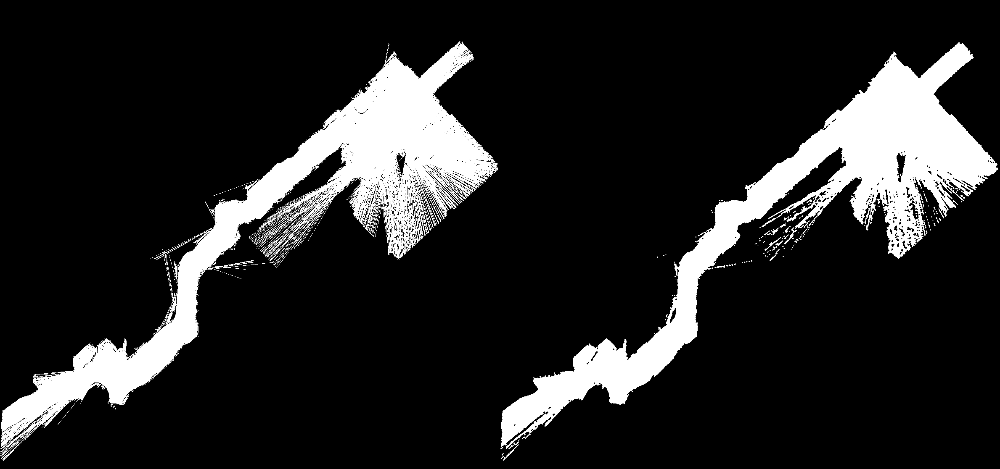
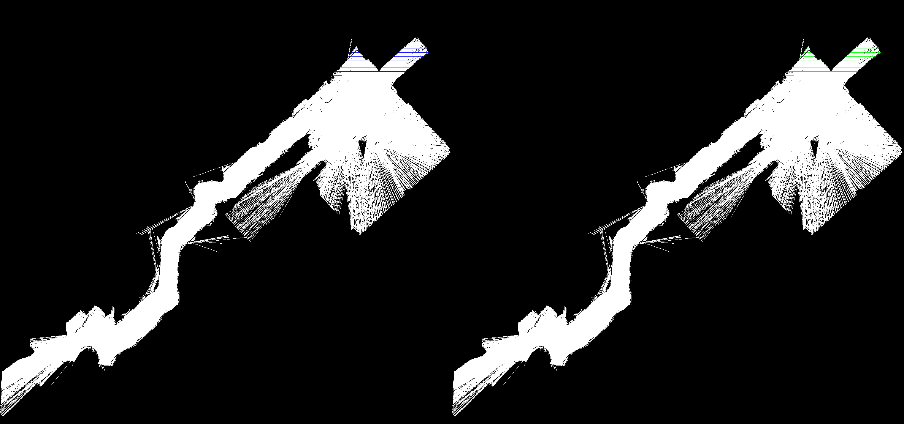
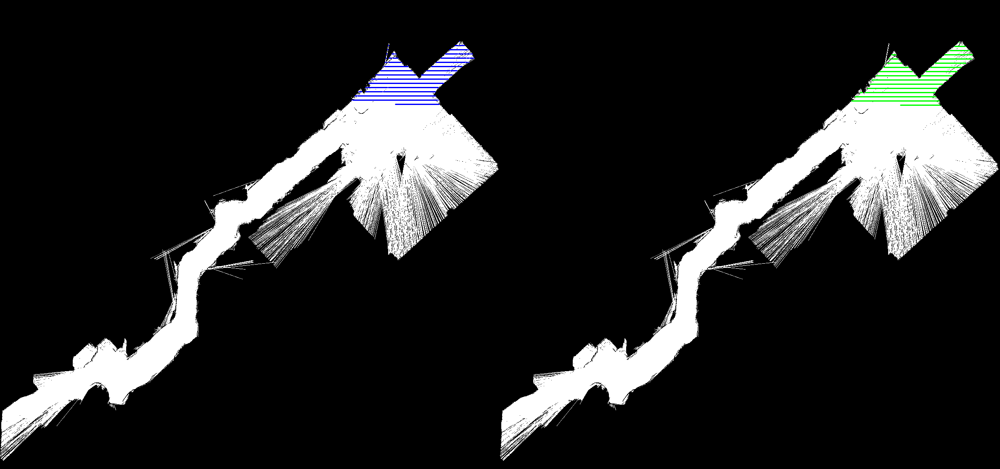
| 指标 | 优化前 | 优化后 | 变化 |
|---|---|---|---|
| 转弯次数 | 92 | 53 | ↓ 42.6% |
| 覆盖率 | - | 97.22% | ✅ 达标 |
| 分区数量 | - | 4 | - |
| 预处理膨胀 | 57,092 | 56,330 | 1.33% |
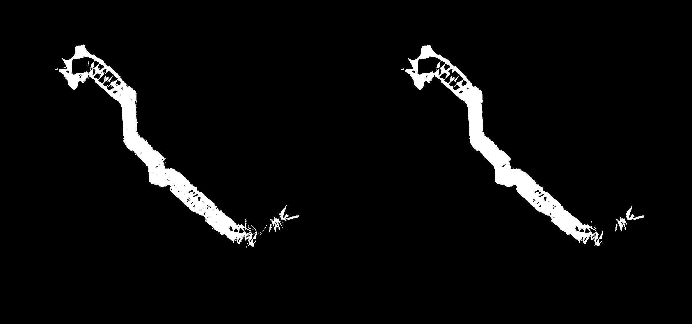
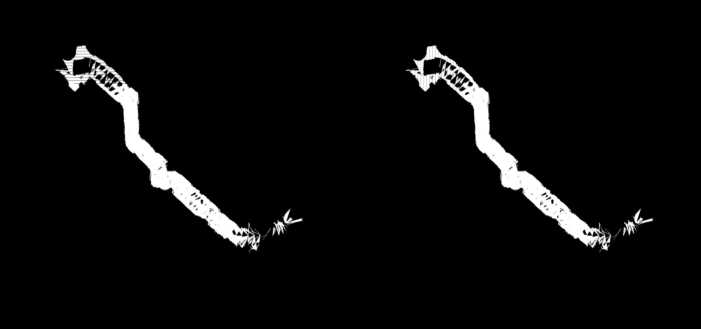
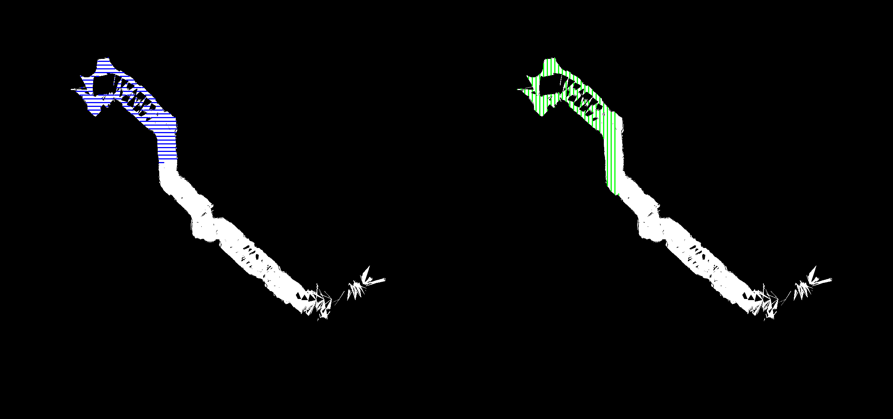
| 指标 | 优化前 | 优化后 | 变化 |
|---|---|---|---|
| 转弯次数 | 224 | 138 | ↓ 38.4% |
| 覆盖率 | - | 98.33% | ✅ 达标 |
| 分区数量 | - | 1 | - |
| 预处理膨胀 | 177,820 | 167,154 | 6.00% |
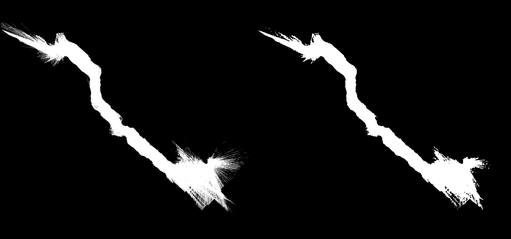
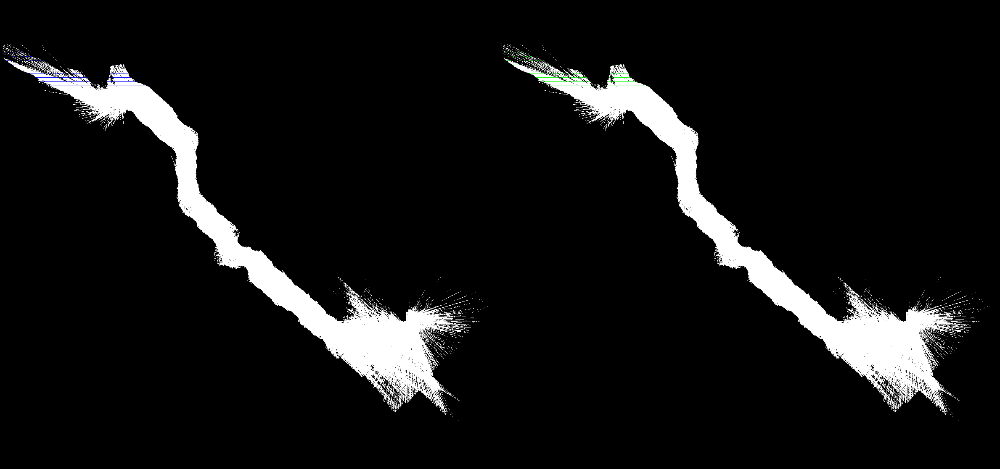
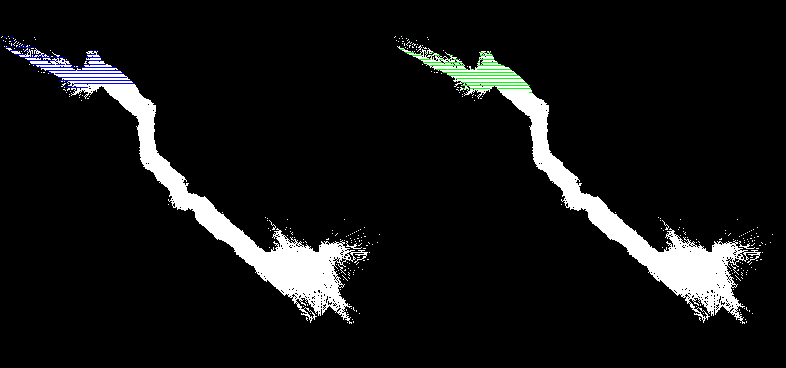
| 验收标准 | 目标值 | map.pgm | layer_0 | layer_3 | 结果 |
|---|---|---|---|---|---|
| 覆盖率 | ≥95% | 96.03% | 97.22% | 98.33% | ✅ 通过 |
| 转弯减少 | ≥30% | 39.7% | 42.6% | 38.4% | ✅ 通过 |
| 预处理膨胀 | ≤10% | 4.55% | 1.33% | 6.00% | ✅ 通过 |
| 分区正确性 | 覆盖所有区域 | 1分区 | 4分区 | 1分区 | ✅ 通过 |
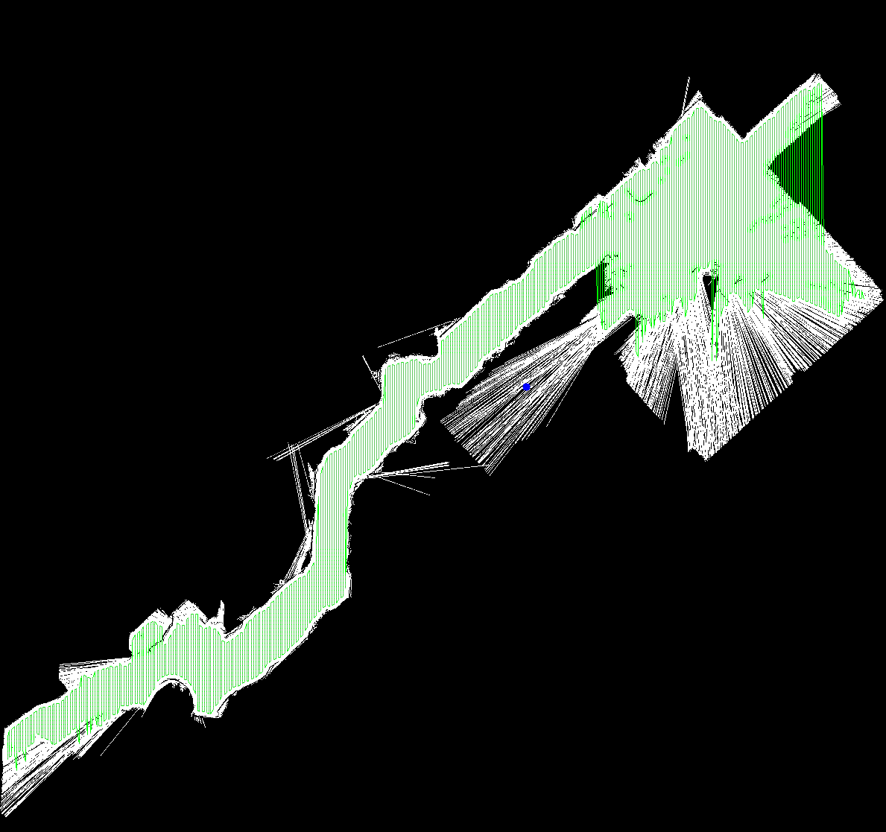
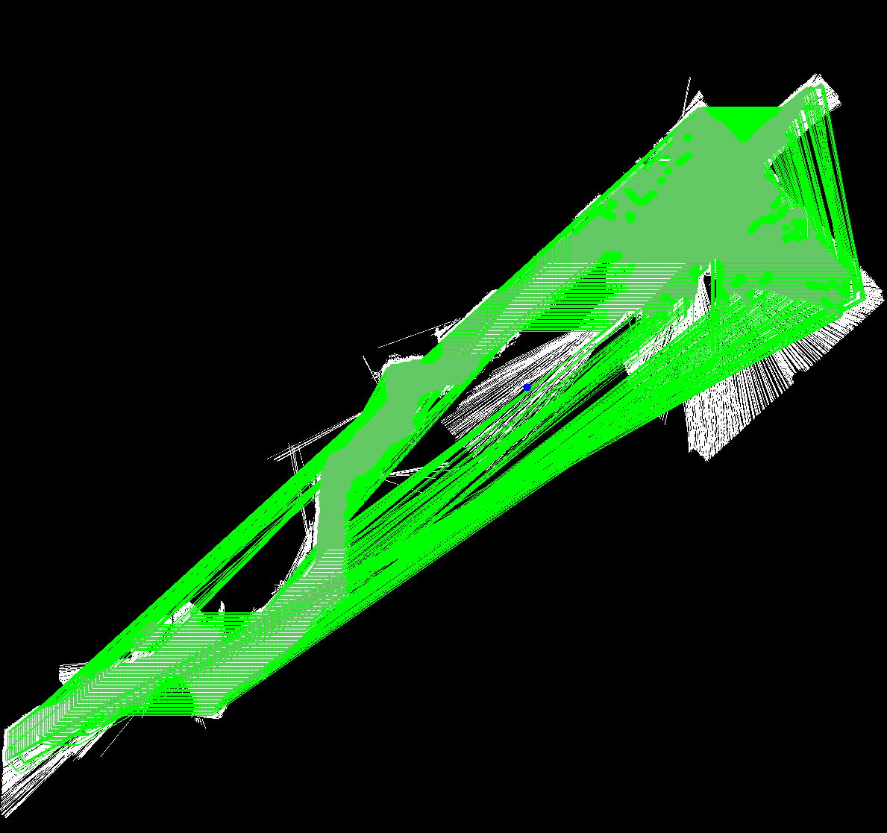
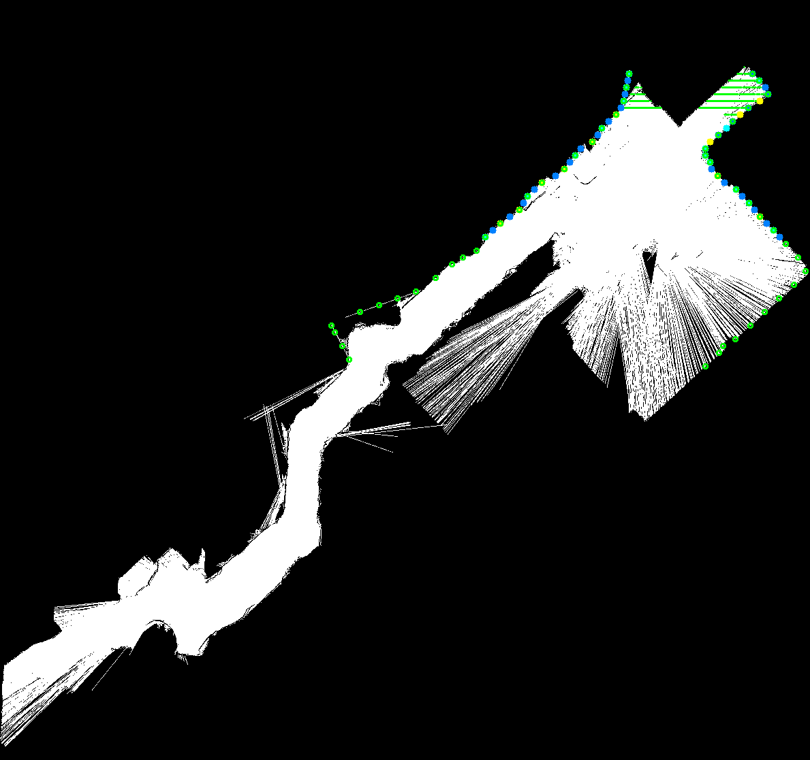